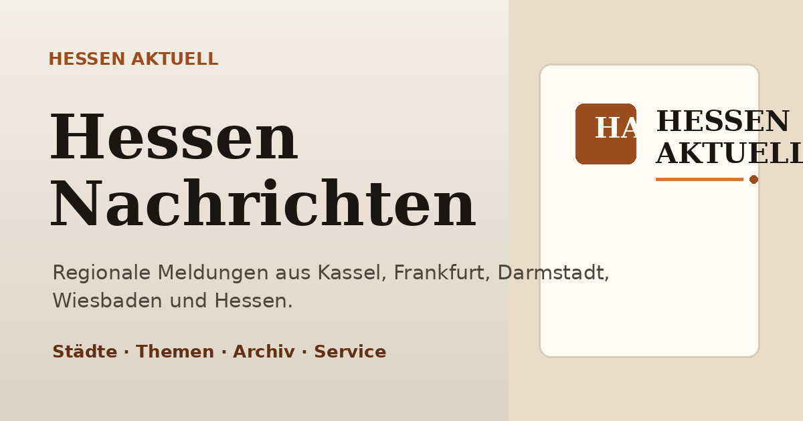
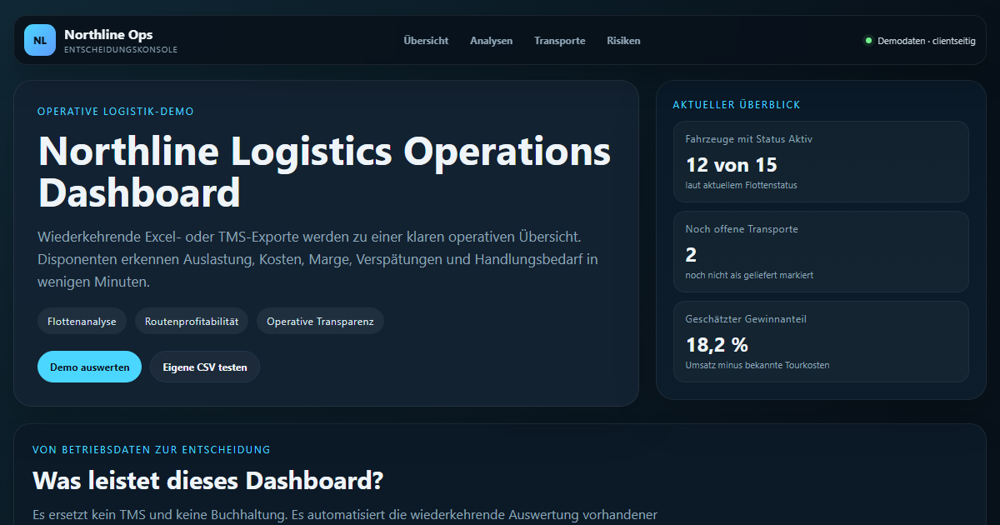
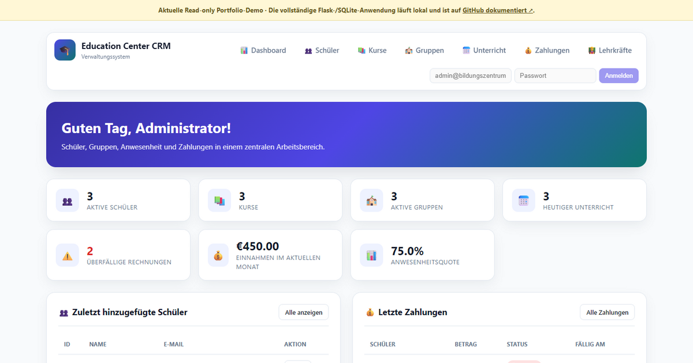

Webanwendungen & Websites
Responsive Webseiten, Informationsportale und Webprodukte mit klarer Nutzerführung.
Softwareentwicklung · Kassel
Technisch orientierter Softwareentwickler mit praktischer Projekterfahrung. Ich entwickle Webanwendungen, Dashboards, Automatisierungen und datenbasierte Systeme mit Python, JavaScript und APIs.
Offen für technische Zusammenarbeit, interessante Softwareprojekte und passende berufliche Möglichkeiten.
Profil
Mein beruflicher Weg verbindet Energietechnik, langjährige praktische Arbeit, Organisation und Kundenkontakt mit moderner Softwareentwicklung.
Ich habe Energietechnik studiert und arbeite seit vielen Jahren mit technischen Systemen, Computern, Daten und strukturierten Abläufen. Heute setze ich diese Erfahrung in eigenen Web- und Softwareprojekten ein.
Ich entwickle funktionierende Lösungen, arbeite mich schnell in neue Systeme ein und dokumentiere den Entwicklungsstand meiner Projekte transparent.
Vollständigen Lebenslauf ansehen ↗Arbeitsbereiche
Von der klaren Webpräsenz bis zum datenbasierten Werkzeug.
Responsive Webseiten, Informationsportale und Webprodukte mit klarer Nutzerführung.
Oberflächen für Kennzahlen, Datensätze, Kunden, Zahlungen und administrative Abläufe.
Python-Werkzeuge, Datenpipelines, Schnittstellen, Prüfungen und wiederholbare Prozesse.
Schwerpunktprojekte
Jeder Status beschreibt ehrlich, wie weit das jeweilige Projekt entwickelt ist.
Software- und Datenplattform für indikatorbasierte Bitcoin-Marktanalyse, simulierte Positionen sowie nachvollziehbare Entry-, Stop-Loss- und Take-Profit-Logik.

Regionales Nachrichtenportal mit Quellenlogik, Stadtseiten, Archiv, SEO und automatisierter Diagnose.

Interaktives Operations- und BI-Dashboard für Flottenstatus, Routenprofitabilität, Kraftstoffkosten und operative Risiken.

Verwaltung von Schülern, Kursen, Gruppen, Anwesenheit und Zahlungen mit Flask und SQLite.
Weitere Projekte
Kontakt
Sie suchen technische Unterstützung, einen motivierten Mitarbeiter, einen Mitentwickler für ein Start-up oder möchten über ein passendes Projekt sprechen? Ich freue mich auf eine direkte Nachricht.
sandroabashishvili@gmail.com